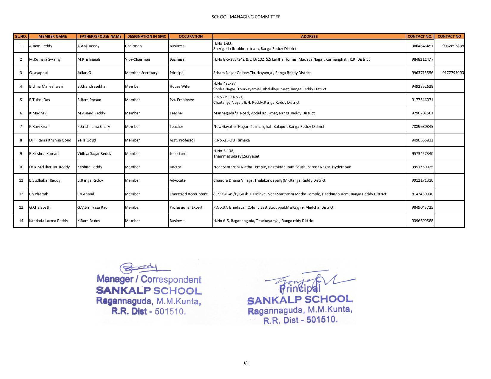

The school is affiliated to the Central Board of Secondary Education(CBSE), New Delhi, and prepares students for the All India Senior School Certificate Examinations (Grade X).
The curriculum is designed to be in keeping with the latest educational trends and techniques and offers a wide variety of practical application avenues that makes it both challenging and rewarding. As a quality school, our aim is to develop each of its students to achieve excellence and realize their full potential in an environment of encouragement and acceptance.
The Day Boarding system for Grade 3 and above makes the school unique in character. The system incorporates academics in the morning followed by lunch, and an Afternoon Self-Improvement Program (ASIP) that includes a supervised study-session and co-curricular activities.
For lunch, well-balanced, nourishing vegetarian and non-vegetarian food is served, while maintaining a high standard of hygiene. Table etiquette is inculcated as the Principal and the teaching faculty dine with the students.
This is followed by a session of study. Under the watchful supervision of the teachers, the students complete their assignments. Students who require special academic assistance are given remedial classes.
The next session explores the varied interest of students through dedicated clubs and popular games to develop inherent skills and talents. Club activities comprise a variety of performing and visual arts, quiz, drama, declamation and elocution. Sports and games include aerobics, athletics, badminton, basketball, cricket, football, gymnastics, karate, swimming, table tennis, throw ball and yoga.
For our younger children in the KG and Grades 1 and 2, the children will be in the constant care of a trained Teacher Assistant supported by lady attendants. Sustaining and appetizing refreshment is provided. Fun-filled and stimulating activities fill the time spent here.
For the secondary students, rigorous afternoon classes are arranged for two hours on all school days.
The tiny tots step into a wonderland at Sankalp. Experienced and caring teachers and assistant teachers initiate the little ones into the world of knowledge through music, games and fun-filled activities .
Development of basic motor skills and communicative skills constitute a major part of the learning experience.
The Wonderland at Sankalp nurtures tiny tots with personal care, the students enjoy the warmth of the nest under the care of mother birds. The excellent team of Kindergarten / Montessori trained teachers is assisted by teacher assistants. Children explore and experience simple lessons of life when they spend their time in the activity room. Phonic methods and well graded writing patterns follow a comprehensive foundation building program. Thus the transition from home to school is easy and enjoyable.
